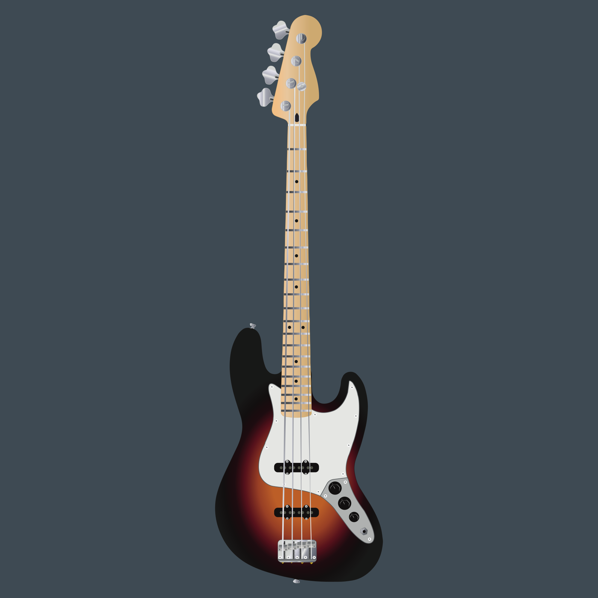
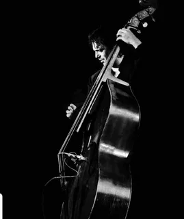
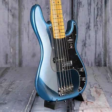

Содержание:
1.Введение
2.Контрабас и виолоне
3.Классический оркестр
4.Джаз
5.Precision Bass
6.Фанк/диско
7.Синтезаторный бас и рождение хип-хопа
8.Драм-н-бейс, электро, дабстеп
9.Современность: бас в эпоху стриминга
10.Заключение
Введение

Бас — это фундамент музыки. Он связывает ритм и гармонию, придаёт композиции глубину и «вес». За несколько столетий бас прошёл путь от аристократического контрабаса до синтезированного сабвуфера в клубах. Игра на бас-гитаре — это сочетание правильной посадки, техники звукоизвлечения и понимания музыкальной роли инструмента. Многие пользуются медиатором, но чтобы прочувствовать глубину звука, то играют пальцами. Медиатор придаёт громкость, чем пальцы. С одной стороны - это может быть даже лучше, но многим нравится играть пальцами из-за красоты.
Контрабас и виолоне

Ранние формы: от виолоне до контрабаса (XVI–XVIII века). Первые прообразы басовых струнных — виолоне и контрабас — появились в Европе в XVI веке. Контрабас стал главным «низким» голосом оркестра, хотя долгое время считался грубым и вспомогательным инструментом. В эпоху барокко композиторы (Бах, Вивальди) начали использовать его для создания гармонической опоры.
Тык-тык-тык и увидишь игру и звук контрабаса///////
Тык-тык-тык и увидишь игру и звук виолонеКлассика и романтизм: бас как голос (XVIII–XIX века)
В классическом оркестре бас получает более сложные партии, а в опере — знаменитые «басовые» арии. Позже романтики (Бетховен, Брамс, Вагнер) делают низкие регистры драматическим средством выразительности.
Рождение ритм-секции: джаз и блюз (начало XX века)
С появлением джаза бас выходит в центр ритм-секции. Контрабас начинает играть walking bass — шагающие линии, задающие пульс. В блюзе и раннем джазе бас становится «двигателем» свинга.
Электрический бас: революция 1950-х

Fender Precision Bass — это первая серийная цельнокорпусная электрическая бас-гитара, которую разработал основатель компании Fender Лео Фендер и выпустила в ноябре 1951 года. Этот инструмент стал настоящим прорывом в музыкальной индустрии, позволив басистам играть громче, точнее и мобильнее, чем когда-либо прежде.
Фанк, диско и рождение грува (1960–1980-е)
Джем-Бутси Коллинз, Ларри Грэм, Маркус Миллер превращают бас в главный «крючок» фанка и диско. Появляется техника слэпа, а бас становится неотделим от танцевальной культуры.
Тык-тык-тык игра на басу слэпомСинтезаторный бас и рождение хип-хопа (1970–1980-е)
Синтезаторы Moog, а позже Roland TB-303, дают «электронный» бас. В хип-хопе басовая линия становится основой сэмплирования, а в электронной музыке — саб-басом для танцполов.
Драм-н-бейс, электро, дабстеп (1990-е — 2000-е)
Сабвуфер переопределяет понятие баса: теперь это не инструмент, а физическое ощущение. В драм-н-бейсе и дабстепе низ превращается в вибрацию, а звукоинженеры раздвигают границы частотного спектра.
Современность: бас в эпоху стриминга (2010-е — настоящее)
Сегодня бас — это и виртуальные синтезаторы, и возвращение интереса к винтажным контрабасам, и гибрид «живой + электронный». Продюсеры активно работают с сайдчейном и обработкой низа, а бас остаётся тем, что делает трек «качающим».
Заключение
История баса — это история того, как музыка меняла своё отношение к низким частотам. От оркестровой подпорки до главного голоса танцпола — бас прошёл огромный путь. И его эволюция продолжается вместе с технологиями.